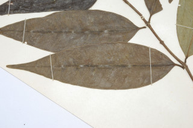
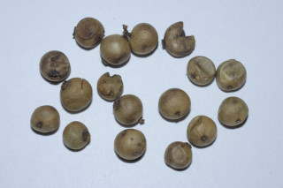
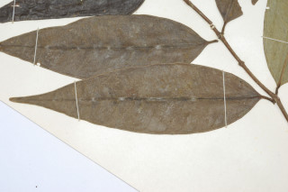
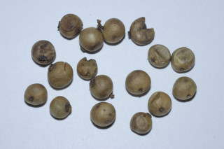

Small trees ca. 5 m tall.
5 ಮೀ. ಎತ್ತರದವರೆಗೆ ಬೆಳೆಯುವ ಸಣ್ಣಮರಗಳು.
ഏതാണ്ട് 5 മീറ്റര് ഉയരമുളള ചെറുമരങ്ങള്.
சிறிய மரங்கள் 5 மீ. உயரம் வரை வளரக்கூடியது.
Branchlets terete, glabrous.
ಕಿರುಕೊಂಬೆಗಳು ದುಂಡಾಗಿದ್ದು ರೋಮರಹಿತವಾಗಿರುತ್ತವೆ.
അരോമിലമായ, ഉരുണ്ട ഉപശാഖകള്.
சிறிய நுனிக்கிளைகள் குறுக்குவெட்டுத் தோற்றத்தில் வளையமானது, உரோமங்களற்றது.
Leaves simple, opposite, decussate; petiole 0.7-1 cm long, stout, planoconvex in cross section, glabrous; lamina 13-16 x 4-5 cm, lanceolate, tapering into acuminate apex with blunt tip, base acute, margin entire, coriaceous, glabrous; midrib slightly raised above; secondary_nerves ca. 20 pairs, distantly parallel and joining with intramarginal_nerve, tertiary_nerves obscure.
ಎಲೆಗಳು ಸರಳವಾಗಿದ್ದು,ಕತ್ತರಿಯಾಕಾರದ ಅಭಿಮುಖ ಜೋಡನಾ ವ್ಯವಸ್ಥೆಯ -ಲ್ಲಿರುತ್ತವೆ; ತೊಟ್ಟುಗಳು 0.7 -1 ಸೆಂ.ಮೀ. ಉದ್ದವಿದ್ದು ರೋಮರಹಿತವಾಗಿದ್ದು ಅಡ್ಡ ಸೀಳಿದಾಗ ಸಪಾಟ ಪೀನ ಮಧ್ಯದ ಆಕಾರದಲ್ಲಿರುತ್ತವೆ; ಪತ್ರಗಳು 13-16 X 4 –5 ಸೆಂ.ಮೀ ಗಾತ್ರ ಹೊಂದಿದ್ದು ಭರ್ಜಿ ಹಂತ ಹಂತವಾಗಿ ಮೊಂಡಾದ ಅಗ್ರವುಳ್ಳ ಕ್ರಮೇಣ ಚೂಪಾಗುವ ತುದಿಯನ್ನು ಸೇರುವ ರೀತಿಯ ಆಕಾರದಲ್ಲಿರುತ್ತವೆ;ಪತ್ರದ ಬುಡ ಚೂಪಾಗಿರುತ್ತದೆ;ಅಂಚು ನಯವಾಗಿರುತ್ತದೆ;ಪತ್ರಗಳು ರೋಮರಹಿತವಾಗಿದ್ದು ತೊಗಲ್ಲನ್ನೋಲುವ ಮಾದರಿಯಲ್ಲಿರುತ್ತದೆ; ಮಧ್ಯ ನಾಳ ಮೇಲ್ಭಾಗದಲ್ಲಿ ಕೊಂಚ ಮೇಲೆದ್ದಿರುತ್ತದೆ;ಎರಡನೇ ದರ್ಜೆಯ ನಾಳಗಳು ಅಂದಾಜು 20 ಜೋಡಿಗಳಿರುತ್ತವೆ ಮತ್ತು ಅಂತರ ಹೊಂದಿದ್ದು ಸಮಾನಾಂತರದಲ್ಲಿರುತ್ತವೆ ಹಾಗೂ ಮತ್ತು ಅಂಚಿನ ನಾಳಗಳನ್ನು ಸೇರುತ್ತವೆ;ಮೂರನೇ ದರ್ಜೆಯ ನಾಳಗಳು ಅಗೋಚರ.
ലഘുവായ ഇലകള്, സമ്മുഖ, ഡെക്കുസേറ്റ് ക്രമത്തിലാണ്; ഛേദത്തില് ഒരുഭാഗം പരന്നും മറുഭാഗം ഉരുണ്ടുമിരിക്കുന്ന ഘടനയുളള, അരോമിലമായ, ദൃഢമായ ഇലഞെട്ടിന് 0.7 സെ.മീ മുതല് 1 സെ.മീ വരെ നീളം; പത്രഫലകത്തിന് 13 സെ.മീ മുതല് 16 സെ.മീ വരെ നീളവും 4 സെ.മീ മുതല് 5 സെ.മീ വരെ വീതിയും, കുന്താകൃതിയുമാണ്, പത്രാഗ്രം മുനപ്പില്ലാത്ത ദീര്ഘാഗ്രമായി നേര്ത്തു വരുന്നതാണ്; പത്രാധാരം നിശിതമാണ്, അരികുകള് അവിഭജിതം, ചര്മ്മില പ്രകൃതം, അരോമിലമാണ്; മുഖ്യസിര മുകളില് അല്പ്പം ഉയര്ന്ന് നില്ക്കുന്നതാണ്; വിദൂരത്തില് സമാന്തരമായിപ്പോയി അന്തര്സീമാന്ത സിരകളുമായി ചേരുന്ന, ഏതാണ്ട് 20 ജോഡി ദ്വീതീയ ഞരമ്പുകളുണ്ട്; ത്രിതീയ ഞരമ്പുകള് അപ്രസക്തമാണ്.
இலைகள் தனித்தவை, எதிரடுக்காமானவை, குறுக்குமறுக்குமானவை, இலைக்காம்பு 0.7-1 செ.மீ. நீளமானது, தடித்தது, குறுக்குவெட்டுத் தோற்றத்தில் பிளேனோகான்வக்ஸ், உரோமங்களற்றது; இலை அலகு 13-16 X 4-5 செ.மீ., ஈட்டி வடிவானது, அலகின் நுனி நீண்ட அதிக்கூரியது மற்றும் மழுங்கிய முனையுடையது, அலகின் தளம் கூரியது, அலகின் விளிம்பு முழுமையானது, கோரியேசியஸ், உரோமங்களற்றது; மையநரம்பு அலகின் மேற்பரப்பைவிட உயர்ந்தது; இரண்டாம் நிலை நரம்புகள் 20 ஜோடிகள் அகன்ற இணையானவை மற்றும் இண்ட்ராமார்ஜினல் (விளிம்பு நரம்பு ) நரம்புடன் அமைந்தவை; மூன்றாம் நிலை நரம்புகள் தெளிவற்றது.
Flowers nearly sessile, in axillary and lateral fascicles, purple; disk rays prominent.
ಹೂಗಳು ಹೆಚ್ಚೂ ಕಡಿಮೆ ತೊಟ್ಟುರಹಿತವಾಗಿದ್ದು,ಅಕ್ಷಾಕಂಕುಳಿನಲ್ಲಿನ ಮತ್ತು ಪಾರ್ಶ್ವದಲ್ಲಿನ ಗುಚ್ಛಗಳಲ್ಲಿದ್ದು ಕೆನ್ನೀಲಿ ಬಣ್ಣದವುಗಳಾಗಿರುತ್ತವೆ;ಬಿಂಬದ ರೇಖೆಗಳು ಪ್ರಮುಖವಾಗಿರುತ್ತವೆ.
പ്രബലമായ ഡിസ്ക് റേയുളള, ഊതനിറത്തിലുളള ഏതാണ്ട് അവൃന്തമായ പൂക്കള്, കക്ഷീയമോ പാര്ശ്വസ്ഥമോ ആയ കൂട്ടങ്ങളിലുണ്ടാകുന്നു.
மலர்கள் கிட்டதட்ட காம்பற்றவை, இலைக்கோணங்களில் மற்றும் தண்டின் பக்கவாட்டில் கழலைகளின் மேல் தொகுப்பானது, பர்புள் நிறமானது.
Berry, seed 1.
ಕಾಯಿಗಳು ಬೆರ್ರಿ ಮಾದರಿಯಲ್ಲಿದ್ದು ಒಂದು ಬೀಜವನ್ನೊಳಗೊಂಡಿರುತ್ತದೆ.
കായ ഒറ്റവിത്തുളള ബെറിയാണ്.
முழுச்சதைகனி (பெர்ரி), கோளவடிவானது, விதை ஒன்றுடையது.
 


